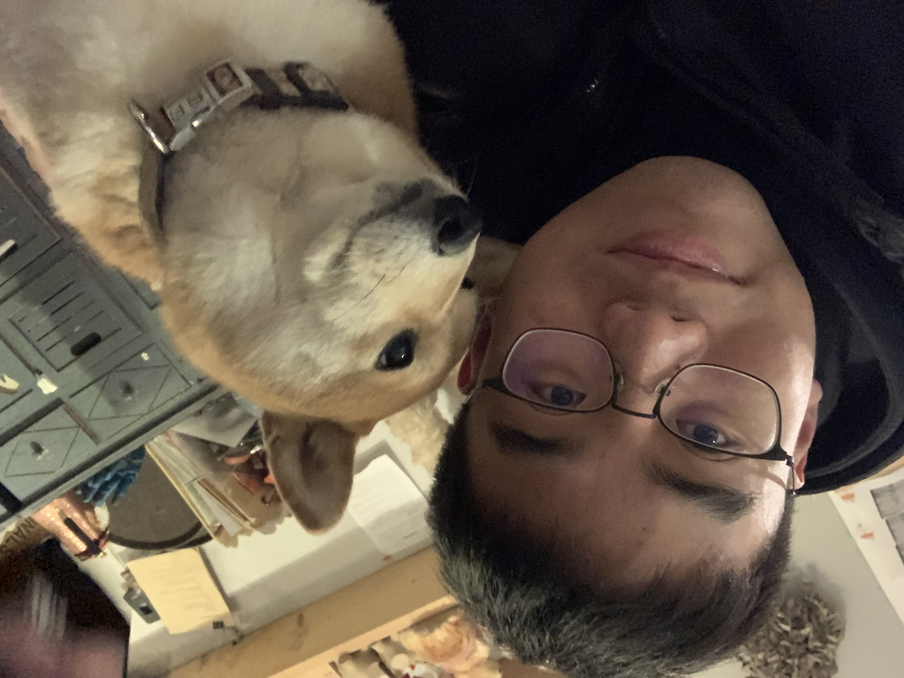

|  |
Yuan Zhang 张袁
Research Intern in Alibaba DAMO Academy. |
Biography
Yuan Zhang is currently a 3th-year master candidate in Peking University,
under the supervision of Prof. Jian Cao.
He received the B.S. degree from Hohai University in 2020
and won the National Scholarship with ranking First in major.
He major research interests lie within computer vision and model compression, such as
- Light Weight Object Detection
- Knowledge distillation (KD)
Publications
-
Masked Distillation with Receptive Tokens
Tao Huang*, Yuan Zhang*, Shan You, Fei Wang, Chen Qian, Jian Cao, Chang Xu
The International Conference on Learning Representations (ICLR), 2023.
[PDF]
[Code]
-
A free lunch from ViT: Adaptive Attention Multi-scale Fusion Transformer for Fine-grained Visual Recognition (AFTrans)
Yuan Zhang, Jian Cao, Ling Zhang, Xiangcheng Liu, Feng Ling, Weiqian Chen
IEEE International Conference on Acoustics, Speech and Signal Processing (ICASSP), 2022.
[PDF]
-
DAMO-YOLO: A Report on Real-Time Object Detection Design
Xianzhe Xu, Yiqi Jiang, Weihua Chen, Yilun Huang, Yuan Zhang, Xiuyu Sun
arXiv preprint arXiv:2211.15444, 2022.
[PDF]
-
An Once-for-All Budgeted Pruning Framework for ConvNets Considering Input Resolution
Wenyu Sun, Jian Cao, Pengtao Xu, Xiangcheng Liu, Yuan Zhang, Yuan Wang
The Conference on Computer Vision and Pattern Recognition (CVPR Workshop), 2022.
[PDF]
Activity
- Invited tutorial talk in IJCB 2021 with the topic of Human-centric Visual Understanding: From Research to Applications.
- Win the 2nd (2/263, top1%) place in Google Landmark Retrieval Competition on ICCV 2021 and silver medal in Google Landmark Recognition Competition. [PDF] [Code] [Kaggle Poster] [Slides] [Video]
- Win the 1st place in Multi-camera Multi-Person tracking on ICCV 2021.
- Win the 1st place in AICITY Challenge Track3 Multi-camera Vehicle Tracking on CVPR 2021. [PDF] [Code]
- Win the 1st place in AICITY Challenge Track2 Vehicle Re-Identification on CVPR 2021. [PDF] [Code]
- Win the 2nd place in RobMOTS: The Ultimate Tracking Challenge on CVPR 2021. [PDF]
- Win the 1st place Tracking Any Objects (TAO) Challenge on ECCV 2020. [PDF] [Code]
- Win the 1st place Visual Domain Adaptation (VisDA) Challenge on ECCV 2020. [PDF] [Code]
- Win the 3rd place in AICITY Challenge Track2 Vehicle Re-Identification on CVPR 2020. [PDF] [Code]
- Organize the Multi-Camera Object Tracking (MCT) Challenge in Visual Surveillance and Re-identification Workshop on ECCV 2014
- Serve as Reveiwer for top conferences and journals, such as PAMI/CVPR/ICCV/ECCV.